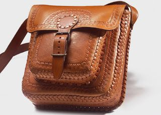
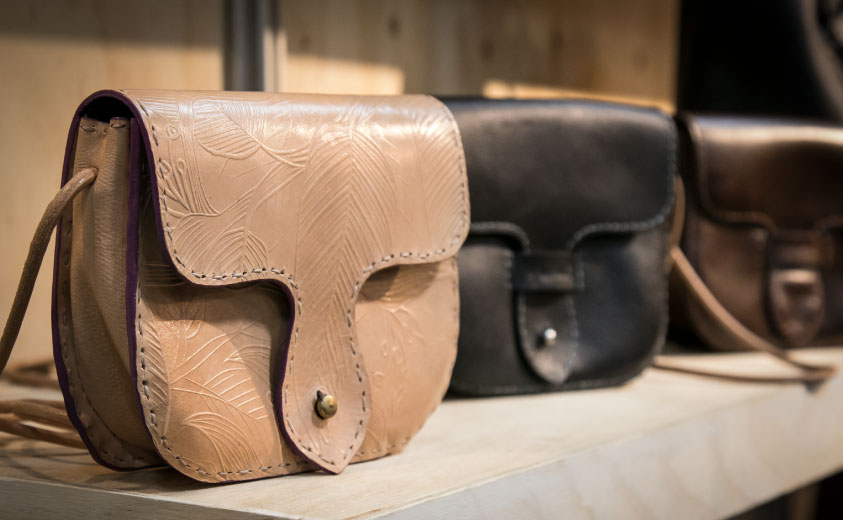
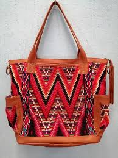

|  | Las pieles que se emplean en los trabajos artesanales suelen ser badanas, pieles de carnero u oveja, o de cabra. Estos cueros no son muy gruesos y son muy maleables: aptos, por lo tanto, para las labores de repujado y modelado.. |
|  | Aceptan perfectamente los tintes, sean del tipo que sean. Lo normal será emplear cueros de oveja, que son mas asequibles y permiten toda clase de labor.. Sobre la superficie blanda del cuero humedo, quedan perfectamente marcados los trazos que se impriman. |
|  | Se emplean, para este tipo de decorado, los mateadores, a los que hay que golpear con un martillo en el extremo opuesto, con la potencia justa para que se marque el dibujo, pero sin que la piel llegue a romperse. Conviene realizar ensayos antes de acometer un mateado definitivo |
| existencias | producto | precio |
|---|---|---|
| 20 | 60.000$ | |
| 15 | |
185.000$ |
| 22 | 170.000$ | |
| 18 | 40.000$ | |
| 30 | 230.000$ |